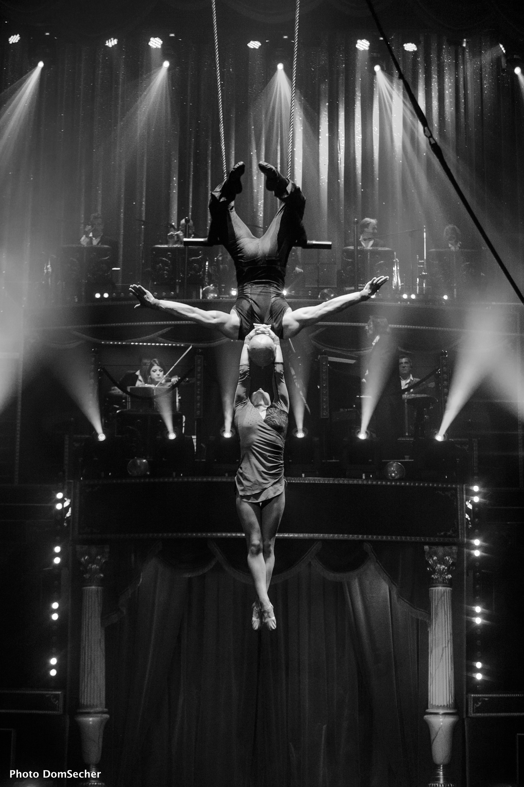
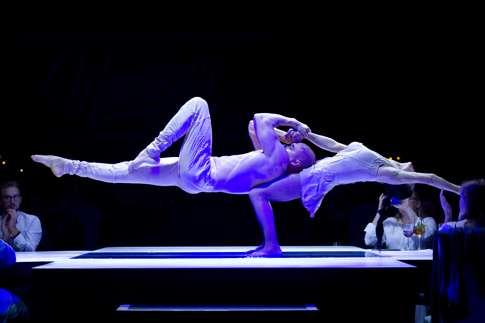

My name Sergii Ovsiannikov.
Born 11.01.1978 in the Izmail city - Ukraine.
I began training in sports acrobatics as a six year old
and later went on to compete for Ukraine in the national team in a men’s group of four.
In 1995 have graduated from the Graduate School of Olympic Reserve in Kiev,
receiving the title of ‘International Masters of Sport’,
the highest award for sports men in the country.
In the period from 1995 - 1999 - I became Champion of the World and Europe a numerous of times.
Since 2000, my artistic career began as an acrobat in the male group in various shows.
Since 2006, my artistic career began as an aerialist and acrobat as part of a duet with my wife.
I took and still take part in various show projects in various countries of the world.
 Since January 2020, began my studies in Tel-Ran
Hopefully after a while, I can fill up a lot more.